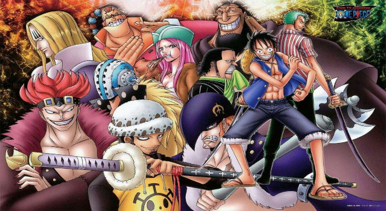
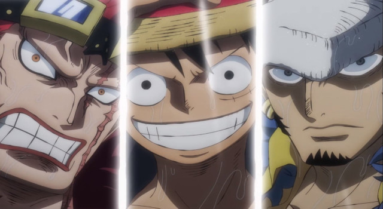

História
Como a maioria dos grandes conflitos que ocorreram após a Batalha de Marineford giram em torno deles, eles são considerados como "crianças problemáticas" que apareceram entre o final da Era de Ouro da Pirataria e o começo da Nova Era.
Antes de se tornarem conhecidos como a Pior Geração, os onze Supernovas eram os melhores piratas novatos de nove tripulações diferentes, que escolheram uma das sete rotas ao longo da Grand Line. Eles são compostos pelos capitães das nove tripulações, bem como dois outros tripulantes que também estão acima do limiar de Bsymbol.gif100,000,000. Eles vêm de todos os mares - East Blue, West Blue, South Blue, North Blue, Ilha do Céu, e a própria Grand Line.
Com exceção dos Piratas do Chapéu de Palha, a maioria dos Supernovas tentou evitar o caminho dos Nobres Mundiais. Coincidentemente, todos os Supernovas chegaram ao mesmo tempo no Arquipélago de Sabaody, o que causou uma série de problemas para os marinheiros. Além disso, todos eles, exceto os Piratas do Chapéu de Palha e os Piratas Heart, entraram no Novo Mundo quase simultaneamente. Marshall D. Teach e sua tripulação, por outro lado, já estavam no Novo Mundo no momento em que os novatos estavam se preparando.
Dos doze piratas, todos menos dois (Roronoa Zoro e Killer) são usuários de Akuma no Mi e capitães de suas respectivas tripulações piratas. De acordo com Shakuyaku, um dos Supernovas poderia ser responsável por inspirar toda uma nova geração de piratas, um comentário que se tornou verdade quando foi revelado que Luffy inspirou Bartolomeo a se tornar um pirata.
De acordo com Morgans, ele acredita que um dos membros da Pior Geração se tornará o próximo Rei dos Piratas.